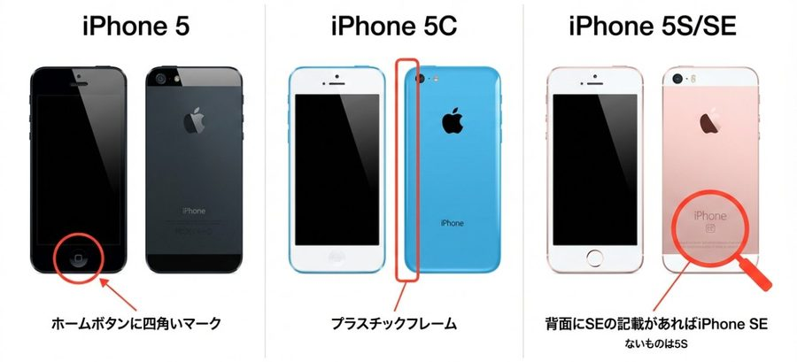
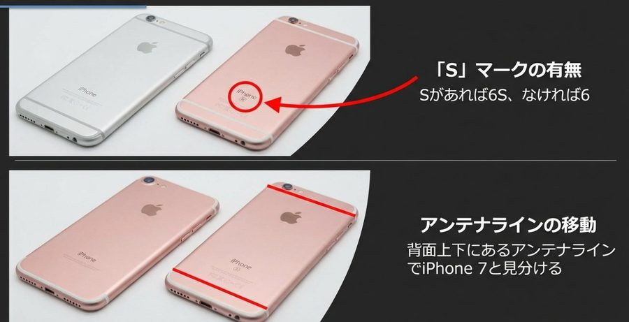
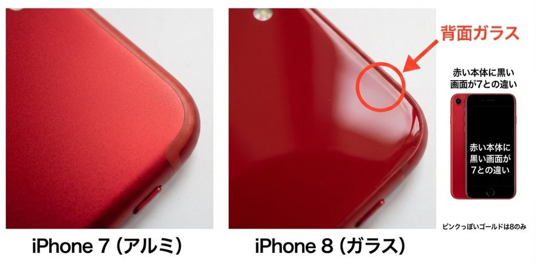
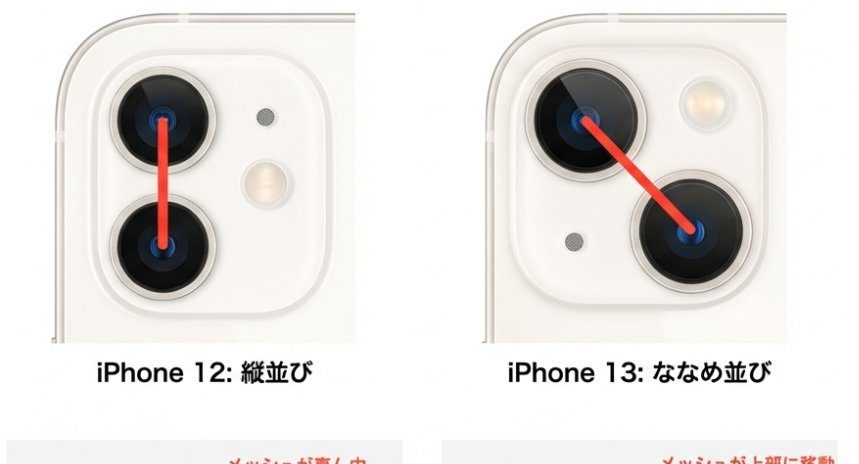
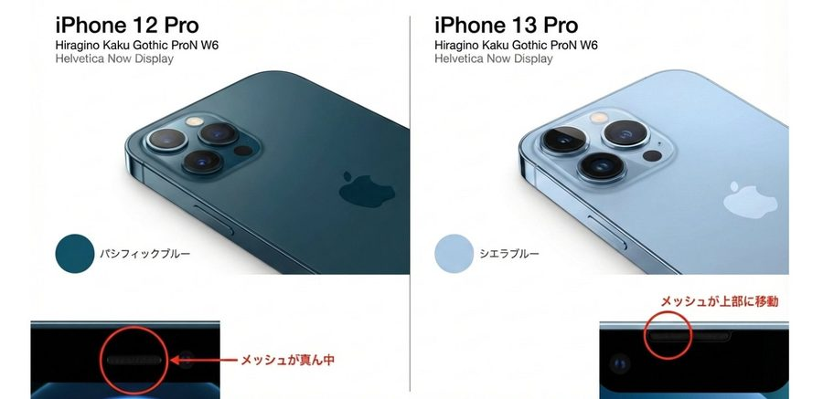
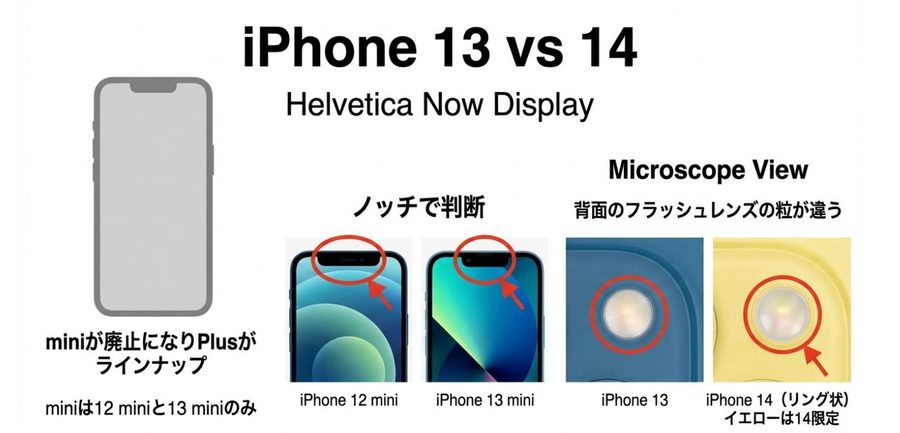
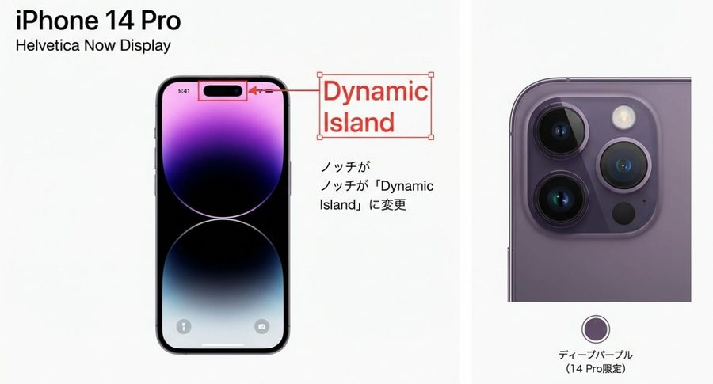
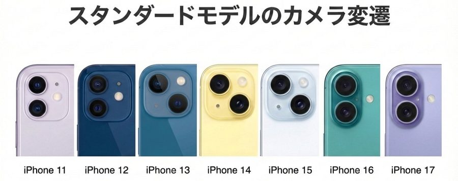
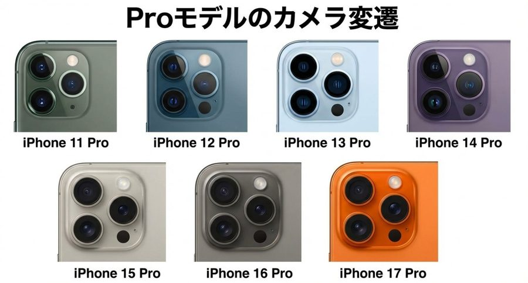

📱
iPhone 機種見分けガイド
ディテールで読み解くデザインの変遷
外観からモデルを特定するビジュアルハンドブック
👥 対象 全スタッフ
📱 対応 iPhone 5 〜 17 Pro Max / SE全世代
受付必須知識
iPhone 5 〜 8 シリーズ

iPhone 5 / 5C / 5S・SE（初代）の見分けポイント
iPhone 5
指紋認証なし — ホームボタンに四角いマーク
4インチ画面
iPhone 5C
指紋認証なし — ホームボタンに四角いマーク
フレームがプラスチックでカラバリ豊富
4インチ画面
iPhone 5S / SE（初代）
背面に「SE」の記載があればiPhone SE。ないものは5S
ピンクのカラーは5Sになく、SEのみの設定
4インチ画面

「S」マークの有無 / アンテナラインでiPhone 7と見分け
iPhone 6 / 6S
背面に「S」の記載があれば6S、なければiPhone 6
ピンクは6になく、6Sのみの設定
背面上下にあるアンテナラインでiPhone 7と見分ける
4.7インチ、Plus系は5.5インチ

iPhone 7（アルミ）vs iPhone 8（背面ガラス）— 赤い本体の画面色が決め手
iPhone 7 / 7 Plus
背面にアンテナラインのないアルミボディ
赤い本体に白い画面はiPhone 7のみ
7 Plusはカメラレンズが2つ
4.7インチ、Plusは5.5インチ
iPhone 8 / 8 Plus
背面ガラスでリンゴマークとiPhoneの文字
赤い本体に黒い画面が7との違い
8 Plusはカメラレンズが2つ
ピンクっぽいゴールドは8のみ
4.7インチ、Plusは5.5インチ
iPhone SE（第2世代）・X 〜 11 シリーズ
iPhone SE（第2世代）
背面ガラスで中央にリンゴマークのみ
白い本体に黒い画面はSE2のみ（画面は黒のみ）
4.7インチ
⚠️ iPhone 8と似ているので注意
iPhone X / XS / XS Max
フェイスID搭載
XS・XS Maxは側面上下にアンテナライン。ラインなしがX
ゴールドはXには設定なし
X・XSは5.8インチ、XS Maxは6.5インチ
iPhone XR
背面ガラスでカメラレンズが1つ
カラーバリエーション豊富
フェイスIDモデル、6.1インチ
オレンジの本体はXRのみ
iPhone 11
背面ガラスで中央にリンゴマークのみ
カメラレンズは2つ、6.1インチ
薄緑、薄紫が独自カラー
フェイスIDモデル
iPhone 11 Pro / 11 Pro Max
背面ガラスでカメラレンズ3つ
5.8インチ、Pro Maxは6.5インチ
深緑が独自カラー / フェイスIDモデル
iPhone 12 〜 14 シリーズ
スタンダード：12 vs 13 の見分け方

12: 縦並び＋メッシュ真ん中 vs 13: ななめ並び＋メッシュ上部
iPhone 12 / 12 mini
フラットエッジデザイン
背面カメラが縦並びに2個
インカメラの穴がメッシュの右側
メッシュがノッチの真ん中辺り
iPhone 13 / 13 mini
フラットエッジデザイン
背面カメラがななめ並びに2個
インカメラの穴がメッシュの左側
メッシュがノッチの上部に移動
Pro：12 Pro vs 13 Pro の見分け方

12 Pro（パシフィックブルー・メッシュ真ん中）vs 13 Pro（シエラブルー・メッシュ上部）
iPhone 12 Pro / 12 Pro Max
フラットエッジ、カメラ3個
パシフィックブルーは12限定
インカメラの穴がメッシュの右側
iPhone 13 Pro / 13 Pro Max
フラットエッジ、カメラ3個
シエラブルー、アルパイングリーンは13限定
インカメラの穴がメッシュの左側
スタンダード：13 vs 14 の見分け方

miniが廃止しPlusへ / ノッチで判断 / フラッシュレンズの粒が違う
iPhone 14 / 14 Plus
背面カメラがななめ並びに2個
miniが廃止になりPlusがラインナップ（PMと同サイズ）
イエローは14限定
インカメラの穴が大きい（13より）
背面フラッシュレンズの粒が違う（13: 丸型 → 14: リング状）
Pro：14 Pro — Dynamic Island 初搭載

ノッチが「Dynamic Island」に変更 / ディープパープルは14 Pro限定
iPhone 14 Pro / 14 Pro Max
背面カメラ3個
ノッチが「Dynamic Island（ダイナミックアイランド）」に変更
ディープパープルは14 Pro限定
iPhone 15 〜 16 シリーズ ・ SE3
iPhone 15 / 15 Plus
背面カメラがななめ並びに2個
ノッチが「Dynamic Island」に変更
LightningからUSB Type-Cに変更
カラーが全体的に淡い色合い / REDなし
iPhone 15 Pro / 15 Pro Max
素材がアルミ→チタニウムに変更
背面カメラ3個、USB Type-C
ブルーチタニウムは15限定
ノッチは「Dynamic Island」
iPhone 16 / 16 Plus
背面カメラが縦並びに2個（フラッシュがフレーム外へ）
ノッチは「Dynamic Island」
カラーが濃い目でポップ
スリープボタン下に「カメラコントロール」搭載
iPhone 16 Pro / 16 Pro Max
背面カメラ3個
ノッチは「Dynamic Island」
デザートチタニウム追加（ゴールドに近い色味）
全機種に「カメラコントロール」搭載
iPhone SE（第3世代）
iPhone SE3
背面ガラスで中央にリンゴマーク
外見はSE2そっくり — 確実な違いはモデル番号
設定→一般→情報でモデル番号をタッチ
SE2: A2296 / SE3: A2782（どちらも日本版）
端末未起動時はSIMトレー内部の刻印で確認
⚠️ カラー見分け：赤 — SE2はピンク寄り朱色、SE3は赤が強い。黒 — SE2は黒色、SE3はネイビー。白 — SE2は白、SE3は金が混じった白（サイドフレームで分かりやすい）
カメラ変遷 — 世代別比較
カメラレンズの配置・サイズの変化を世代ごとに比較。修理時のパーツ特定に活用してください。

スタンダードモデルのカメラ変遷（iPhone 11 〜 17）
デュアルカメラモデル — レンズサイズ比較
iPhone 12mini/12
上 小 / 下 大
iPhone 13mini/13
上 小 / 下 大
iPhone 14/Plus
上 小 / 下 大
※上は厚い ※サイズほぼ同じ
iPhone 15/15Plus
上 小 / 下 大
※上は厚い ※サイズほぼ同じ
iPhone 16/16Plus
上 小 / 下 大
※上は厚い

Proモデルのカメラ変遷（iPhone 11 Pro 〜 17 Pro）
トリプルカメラモデル — レンズサイズ比較
iPhone 11 Pro/PM
右小 / 上中 / 下大
※中・大ほぼ同じ
iPhone 12 Pro
右小 / 上中 / 下大
※中・大ほぼ同じ
iPhone 13 Pro/PM
右小 / 上大 / 下中
※右は厚い
iPhone 14 Pro/PM
右小 / 上大 / 下中
※右は厚い
iPhone 15 Pro
右大 / 上小 / 下中
※上下ほぼ同じ
iPhone 16 Pro/PM
右大 / 上小 / 下中
※上は厚い